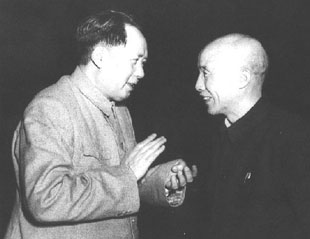 |
1950年6月，和青年时代的教师符定一交谈 |
1951年
2月，在中共中央政治局扩大会议上提出“三年准备、十年计划经济建设”的思想。
5月20日，写作的《应当重视电影〈武训传〉的讨论》一文以《人民日报》社论形式发表。
5月24日，设宴庆贺《关于和平解放西藏办法的协议》签订。至此，中国大陆全境解放。
9月，主持制定《中共中央关于农业生产互助合作的决议（草）》。
10月12日，《毛泽东选集》第一卷出版发行。第二卷和第三卷分别于1952年4月和1953年4月出版发行。
12月，发动反贪污、反浪费、反官僚主义的“三反”运动。
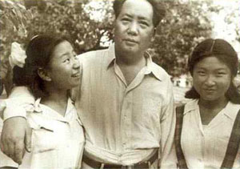 |
1951年8月与女儿李敏、李讷在北京香山 |
1952年
1月，主持全国政协常委会，通过《关于开展各界人士思想改造的学习运动的决定》。
1月26日，为中共中央起草关于开展“五反” 运动的指示（“五反”即反对行贿、反对偷税漏税、反对盗骗国家财产、反对偷工减料、反对盗骗国家经济情报）。
4月6日，为中共中央起草《关于西藏工作方针的指示》。
8月9日，发布《中华人民共和国民族区域自治实施纲要》。
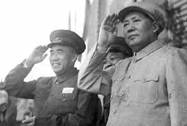 |
1952年，毛泽东和朱德 |
1953年，毛泽东和彭德怀 |
9月，开始酝酿提出过渡时期总路线。
1953年
1月13日，中华人民共和国宪法起草委员会成立，任主席。
3月26日，为中共中央起草关于反对大汉族主义思想的指示。
6月15日，在中共中央政治局会议上讲话，对党在过渡时期总路线作出比较完整的表述。
7月27日，朝鲜停战协定在板门店正式签字。
9月7日，同民主党派和工商界部分代表谈话，指出国家资本主义是改造资本主义工商业的必经之路。
10月15日、11月4日，两次同中共中央农村工作部负责人谈话。指出，各级农村工作部要把互助合作看作极为重要的事。
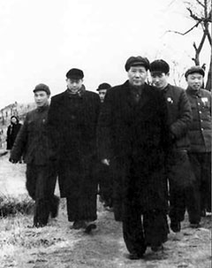 |
1953年，毛泽东视察湖北农村。 |
1954年
1月，开始在杭州主持起草中华人民共和国宪法。
3月23日，主持宪法起草委员会第一次会议，提出中华人民共和国宪法草案初稿。
9月15日至28日，出席全国人大第一届第一次全体会议，致开幕词《为建设一个伟大的社会主义国家而奋斗》，当选中华人民共和国主席。
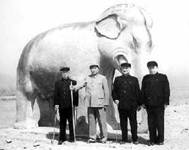 |
1954年4月，毛泽东和程潜(右二)、程星龄(右一)、表兄王季范(左一)在北京十三陵 |
9月28日，中共中央军事委员会组成，任主席。
10月16日，给中共中央政治局及有关同志写《关于红楼梦研究问题的信》。
10月19日，在同印度总理尼赫鲁的谈话中提出，和平共处五项原则应推广到所有国家关系中去。
1955年
1月15日，批示刘少奇、周恩来、邓小平：“应对胡风的资产阶级唯心论，反党反人民的文艺思想，进行彻底的批判。”
3月，在中国共产党全国代表会议上致开幕词并作结论，号召干部要钻研社会主义工业化问题，成为这方面的内行。
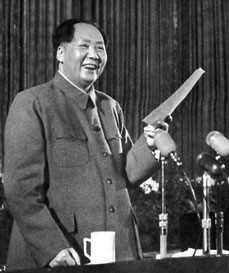 |
1955年3月，毛泽东在中国共产党全国代表会议上致开幕词 |
5月12日，在最高国务会议上提出肃反工作方针。
6月9日，为天安门人民英雄纪念碑题词：人民英雄永垂不朽。
7月31日，在中共中央召集的省委、市委、自治区党委书记会议上作《关于农业合作化问题》的报告。
9月至12月，主持编辑《中国农村的社会主义高潮》一书，写了两篇序言和104篇按语。
10月4日至11日，主持召开中共七届六中全会，通过《关于农业合作化问题的决议》。
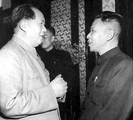 |
1956年与澳门中华总商会理事长何贤 |
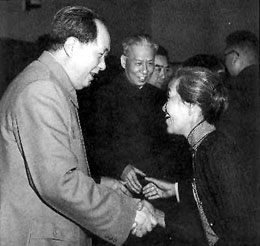 |
1956年与著名妇产科专家林巧稚 |
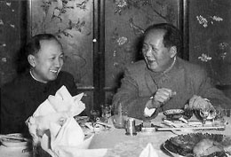 |
1956年，宴请从美归国的钱学森 |
10月29日，邀集全国工商联执行委员座谈私营工商业的社会主义改造问题。
12月16日，修改中央关于知识分子问题的指示草案，提出要大批地培养知识分子，注意吸收高级知识分子入党。
1956年
1月20日，在中共中央召开的关于知识分子问题的会议上讲话，号召全党努力学习科学知识，同党外知识分子团结一致，为迅速赶上世界科学先进水平而奋斗。
1月25日，主持最高国务会议正式讨论通过《1956年到1967年全国农业发展纲要（草案）》（即四十条）。
2月至3月，先后听取34个中央工作部门的汇报，对经济建设问题进行系统的调查研究。
4月初，审改《关于无产阶级专政的历史经验》。
4月25日，在中共中央政治局扩大会议上作《论十大关系》的报告。
4月27日，签名死后实行火葬。
4月28日，在中共中央政治局扩大会议上提出“百花齐放，百家争鸣”的方针。
8月22日，主持召开中共七届七中全会，提出两个工作重点，一个是社会主义改造，一个是经济建设，两个重点中主要的还是在建设。
9月15日至27日，主持召开中国共产党第八次全国代表大会，致开幕词。在八大期间，再次强调了加强经济建设的重要性。
9月28日，在中共八届一中全会上当选为中央委员会主席。
11月15日，在中共八届二中全会上讲话：我们的经济建设有退有进，主要的还是进。
12月，审改《再论无产阶级专政的历史经验》。
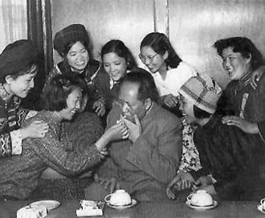 |
1957年，毛泽东和出席中国新民主主义青年团第三次全国代表大会的代表在一起 |
1957年
2月27日，作《关于正确处理人民内部矛盾的问题》讲话，提出两类矛盾学说。
3月12日，在中国共产党全国宣传工作会议上讲话，宣布开始在党内进行整风。
4月30日，邀集各民主党派负责人座谈，请他们帮助共产党整风。
5月15日，写《事情正在起变化》一文，随后发动反右派斗争，发生严重扩大化的错误。
9月20日至10月9日，主持召开中共八届三中全会，在会上对八大决议中关于我国社会的主要矛盾的论述提出异议，认为应该回到党的七届二中全会的提法。
11月，率中国党政代表团访问苏联，参加十月革命四十周年庆祝活动，出席共产党和工人党的代表会议。期间，提出15年内中国主要工业产品的产量要赶超英国。
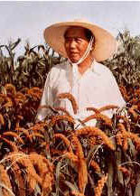 |
1958年视察河南农村 |
1958年
1月，主持召开中共中央南宁会议，起草《工作方法六十条（草案）》。在会上批评“反冒进”。
3月，主持召开中共中央成都会议。会议继续批评“反冒进”，制定的各项经济指标大幅度提高。
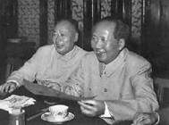 |
1958年，毛泽东和陈毅 |
5月5日至23日，主持召开中共八大二次会议。会议改变八大一次会议的有关结论，认为两个阶级、两条道路的斗争仍然是国内主要矛盾。会议通过“鼓足干劲，力争上游，多快好省地建设社会主义”的总路线。
7月31日至8月3日，同来访的苏共中央第一书记赫鲁晓夫会谈，拒绝了苏方提出的侵犯中国主权的关于建立联合舰队和长波电台的建议。
8月6日，视察河南新乡七里营人民公社。说到“人民公社这个名字好”。
 |
1959年6月，毛泽东和他少年时代的 |
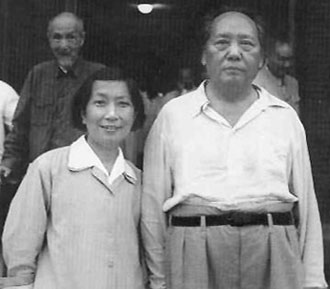 |
1959年6月，毛泽东和早年挚友 |
夏秋，亲自部署炮击金门。
8月17日至30日，在北戴河主持召开中共中央政治局扩大会议，通过《关于在农村建立人民公社问题的决议》。
11月2日至10日，主持召开第一次郑州会议，开始纠正“大跃进”和人民公社化运动中的“左”倾错误。会议期间，给县以上四级党委写信，要求学习《苏联社会主义经济问题》和《马恩列斯论共产主义社会》。
11月28日至12月10日，在武昌主持召开中共八届六中全会，通过《关于人民公社若干问题的决议》。
1959年
2月27日至3月5日主持召开第二次郑州会议，3月25日至4月5日在上海召开中共中央政治局扩大会议和八届七中全会，继续纠正“左”倾错误。
4月，根据毛泽东的意见，第二届全国人大第一次会议通过他不再担任国家主席，由刘少奇继任的决议。
6月25日至28日，回故乡韶山。
7月2日至8月16日，在庐山主持召开中共中央政治局扩大会议和八届八中全会。政治局扩大会议原拟进一步纠正“左”的错误，但在后期和接着召开的八届八中全会上错误地发起了对彭德怀等的批判。
8月24日，建议分期分批为右派分子摘帽和赦免一批确实改恶从善的战犯等。9月17日，中共中央下发了《关于摘掉确实悔改的右派分子的帽子的指示》；全国人大常委会第九次会议通过了《关于特赦确实改恶从善的罪犯的决定》。
12月10日至翌年2月9日，组织有陈伯达、胡绳、邓力群、田家英参加的读书小组，先后在杭州、上海和广州，学习讨论苏联《政治经济学（教科书）》，并发表了许多谈话。
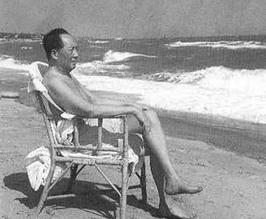 |
1960年，毛泽东在北戴河游泳后小憩 |
1960年
3月，在广州审定《毛泽东选集》第四卷。九月出版发行。
3月30日，为中共中央起草《关于反对官僚主义的指示》。
6月14日至18日，在上海主持召开中共中央政治局扩大会议，写《十年总结》一文，重新强调实事求是原则，提出要认真研究社会主义革命和建设的规律。
7月5日至8月10日，主持在北戴河召开的中共中央工作会议，研究国际问题和国内经济调整问题。
11月15日，为中共中央起草《关于彻底纠正“五风”问题的指示》。（“五风”，即共产风、浮夸风、命令风、干部特殊风和瞎指挥风。）
10月以后，发动和领导了镇压反革命运动。